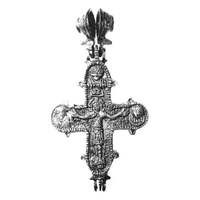
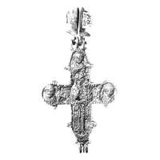

Catalog › CE-0692 · KOR2003-II.1.1.71
Encolpion întreg cu inel de agățare biconic compus și bordură zimțată, reliefuri grosolane
sec. XIII (1201–1300) · Osovik, raionul Rogneda, regiunea Briansk, Rusia · Institutul de Istorie a Culturii Materiale (IIMK RAN), Sankt Petersburg
double-sided reliquary cross (enkolpion), aramă; c. XIII (1201–1300); found at Osovik, raionul Rogneda, regiunea Briansk, Rusia; kept at Institutul de Istorie a Culturii Materiale (IIMK RAN), Sankt Petersburg.




Identificare
- Categorie
- Encolpion bivalv (relicvar)
- Material
- Aramă
- Tehnică
- Turnare în relief; Gravare (incizie)
- Stare
- Întreagă
- Dimensiuni
- Î 85 × L 70 mm
Datare și atribuire
- Datare
- sec. XIII (1201–1300)
- Centru
- Necunoscut
- Tipologie
- Korzukhina–Peskova 2003, tip II 1 1
Descoperire
- Localitate
- Osovik
- Regiune
- raionul Rogneda, regiunea Briansk
- Țară
- Rusia
- Context
- Fortificație
- Anul
- 1975
Păstrare și referințe
- Colecție
- Institutul de Istorie a Culturii Materiale (IIMK RAN), Sankt Petersburg
- Bibliografie
- G. F. Korzukhina, A. A. Peskova, Древнерусские энколпионы. Нагрудные кресты-реликварии XI–XIII вв., Sankt-Petersburg, 2003 [Korzukhina–Peskova 2003], p. 69, cat. nr. II 1 1/71, reprodusă la Табл. 25 (planșe, p. 267). Bibliografie citată în sursă: Павлова, arhiva RA IIMK RAN, ф. 35, оп. 1, д. 74; НФ ИИМК РАН 151512.
- Figura
- Табл. 25
- Planșe
- Korzukhina–Peskova 2003, Табл. 25 (planșă fără paginație proprie în PDF; p. 267 tipărită)
- Observații
- Datare după Peskova: sec. XIII. Circumstanțe: Săpături K. V. Pavlova, 1975, pe așezarea fortificată, construcția nr. 43. Inel de agățare biconic compus; pe marginea ambelor valve bordură zimțată în relief; reliefuri grosolane, cu chipuri mărite ale sfinților și elaborare arbitrară a detaliilor; inscripții doar pe valva de față, dezordonate. Coordonate: nu sunt date în sursă.
Citare: Corpus Encolpiorum, CE-0692, Encolpion întreg cu inel de agățare biconic compus și bordură zimțată, reliefuri grosolane, --root/piese/KOR2003-II.1.1.71/ (accesat 2026-10-17).